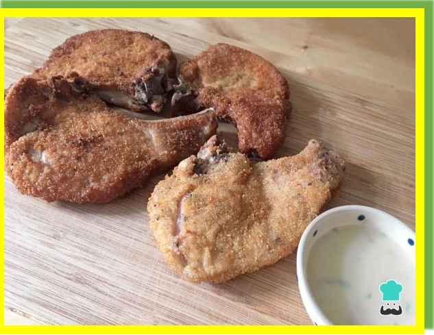

Receita de Bisteca de Porco à Milanesa ao Molho de Queijos
Sobre este delicioso prato
Procurando receitas de bisteca para variar no preparo dessa peça de carne? Aqui no Receitas do Brasil compartilho com vocês esta sugestão simplesmente irresistível: bisteca de porco à milanesa ao molho de queijos! Ao contrário do que acontece com outras receitas, nessa a bisteca de porco fica macia suculenta, além de muito saborosa!
Prepare logo esta receita de costeleta de porco empanada fácil acompanhada de molho de queijos para receber seus amigos ou família e desfrutar de uma refeição gostosa, com cara de chique e econômica. Confira abaixo todos os detalhes e passo a passo em fotos e videos!
Lista de ingredientes
4 bistecas de porco
1 xícara de farinha de rosca
1 ovo batido
1 pitada de sal
1 pitada de pimenta do reino
1 pitada de orégano
50 gramas de queijo gouda
40 gramas de queijo gorgonzola
2 colheres de sopa de leite ou creme de leite
Media xícara de azeite de oliva ou óleo
Passos a seguir para fazer esta receita
Junte os ingredientes necessários ao preparo desta receita de bisteca, já pesados e separados.
Comece por temperar a carne com sal, pimenta do reino e orégano. Reserve para pegar o sabor.
Enquanto isso prepare o molho de queijos em banho-maria no fogão: coloque água numa panela (até ocupar 1/3 da quantidade total), encaixe sobre ela uma vasilha de inox ou vidro temperado com os queijos e o leite dentro. Leve ao fogo médio e mexa de vez em quando até derreter completamente.
Agora coloque o ovo batido num prato fundo e passe as bistecas por ele. Passe as bistecas por farinha de rosca, envolvendo bem.